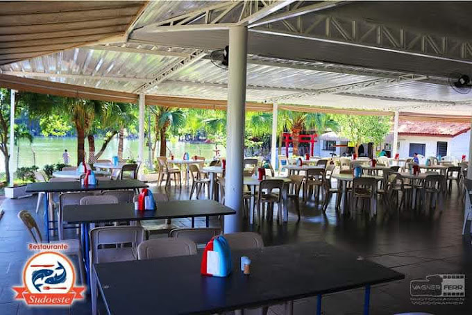

INFO:
Sobre mim: Me chamo André de Carvalho Alves, tenho 17 anos, sou uma pessoa muito paciente e criativa, até ano que vem quero iniciar um curso no Senai de aprendizagem industrial como, por exemplo, elétrica. Pretendo até meus 25 anos de idade estar já estabelecido financeiramente, assim tendo já bens materiais como um imóvel e um automóvel.
Vídeo de uma das gincanas:
Projeto Escolares: Gincanas escolares 2024, tivemos diversas brincadeiras como, dança das cadeiras, acerte o alvo, corrida passa bola, ache o par do seutênis, e por fim nas ultímas aulas tivemos nas salas de aulas tivemos lazeres como, vídeo games, cinema e karaoke.
Habilidades técnicas: Desenho, Excel, Desenvolvimento em Java Script
Trabalhos pessoais: Projeto Praias (Java script) e Portfolio pessoal.
Formação Acadêmica:
Formação Continuada:
Imagem do Local de trabalho:
Experiências em trabalhos: Trabalho Freelancer como barman no restaurante Sudoeste, minha função é preparar os pedidos para os garçons levarem aos clientes, colocando por exemplo refrigerantes, copos e cervejas nas bandeijas, além de tambem fazer drinks como capirinhas e lavar a louça.